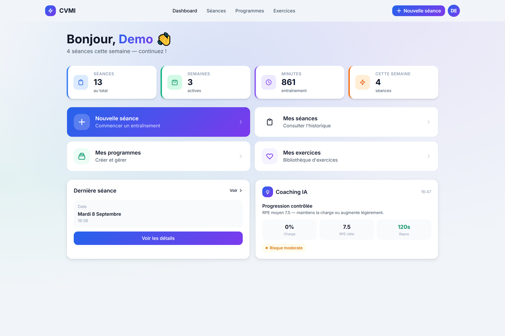

CVMI
Un carnet de musculation qui fonctionne en salle.
Un coach de musculation web et mobile : séances, supersets et recommandations adaptées. Une API commune, des données disponibles hors ligne et une synchronisation qui reprend après une coupure.
Voir le projet